Umbra-Leitfaden: Bester Dunkelheits-Beschwörer für Hero Wars Dominion Era
- Von: Alexandre Domingos. .
Umbra ist kein normaler Schadensausteiler. Er ist ein Dunkelheits-Beschwörer, der das Schlachtfeld in einen Countdown verwandelt: Beschwöre Caligo, sperre Gegner in der Aura ein und bestrafe dann alle, die noch stehen, wenn Caligo stirbt. Wenn du Titanenkämpfe magst, in denen eine verzögerte Explosion alles verändert, ist Umbra genau die Einheit, die du dir genau ansehen solltest.
Dieser Hero Wars: Dominion Era Leitfaden erklärt Umbras maximale Werte, wie Caligomora wirklich funktioniert, welcher Skin und welche Artefakte am wichtigsten sind, die besten elementaren und primalen Totem-Fusionen, Konter und das beste Dunkelheits-Team, das Alexandre getestet hat.
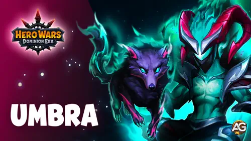
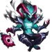
Umbra Inhaltsverzeichnis
- Wer ist Umbra?
- Umbras Gesamtbewertung im Meta
- Umbras Vor- und Nachteile
- Umbra Fähigkeiten-Leitfaden
- Bester Skin für Titan Umbra
- Umbras Artefakt-Entwicklungspriorität
- Beste elementare Totem-Fusion für Umbra
- Beste primale Totem-Fusion für Umbra
- Umbra Konter
- Beste Umbra-Teams
- Fazit
Wer ist Umbra?
Umbra ist ein Dunkelheits-Beschwörer-Titan in Hero Wars: Dominion Era. Seine Kraft kommt von Caligo, einer Beschwörung, die 7 Sekunden lebt, eine Aura erzeugt, Druck durch Schaden absorbiert, der Gegnern innerhalb dieser Aura zugefügt wird, und dann mit einem finalen Treffer explodiert, wenn der Countdown endet. Umbra ist am stärksten, wenn das Team Gegner in Caligos Zone gebündelt halten kann, während das Totem des Dunklen Geistes sie zur Mitte zieht.
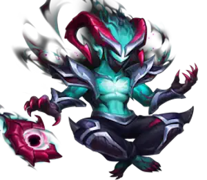
- Rolle: Beschwörer
- Element: Dunkelheit
- Position: 14 (mittlere Linie)
- Kraft: 218,567
- Angriff: 795,605
- Basisangriff: 799,605 alle 3.8 Sekunden
- Elementarangriff: 479,475
- Gesundheit: 14,881,865
- Elementarrüstung: 175,467
- Synergie: Dunkelheits-Titanen, Caligo, Totem des Dunklen Geistes
Umbras Vor- und Nachteile - Hero Wars: Web und Facebook
Vorteile
- Starker verzögerter Explosionsschaden: Caligomora endet mit 795,605 Schaden plus Caligos verbleibender Gesundheit und erzeugt dadurch ein riesiges Bestrafungsfenster.
- Schnelles Anfangstempo: Spirituelles Band: Dunkelheit lässt Umbra mit 30% Energie starten, sodass er seine erste Beschwörung schneller erreicht als normale Titanen.
- Beschleuniger für das Dunkle Totem: Umbra erzeugt 10% mehr Energie für das Totem des Dunklen Geistes und hilft Schwarzes Loch dadurch, früher zu aktivieren.
- Ausgezeichnete Synergie mit voller Dunkelheit: Tenebris, Keros, Mort, Brustar und Umbra profitieren alle vom selben Plan rund um das Totem des Dunklen Geistes.
- Starke Angriffsleistung: Das getestete vollständige Dunkelheits-Team besiegte vollständige Wasser- und vollständige Feuer-Teams und kann vollständige Licht-Teams im Angriff schlagen.
- Caligo kann nicht direkt anvisiert werden: Gegner können Caligo nicht einfach mit Basisangriffen fokussieren.
Nachteile
- Braucht Teamdruck: Umbra ist kein einfacher Solo-Carry. Sein Wert steigt stark, wenn Verbündete Gegner in Caligos Aura halten.
- Licht-Teams sind gefährlich: Licht und Dunkelheit stehen einander gegenüber, und vollständige Licht-Teams sind der zuverlässigste Konter in der Verteidigung.
- Erde-Teams können eine Mauer sein: In Kampftests besiegte vollständige Erde das vollständige Dunkelheits-Team etwa 90% der Zeit.
- Verzögerter Schaden kann durch Tempo abgefangen werden: Wenn Gegner überleben, heilen, Schilde erhalten oder den Druck entfernen, bevor Caligo stirbt, verliert die finale Explosion an Wirkung.
- Dungeon-Einsatz ist situativ: Umbra ist am besten in gemischten 5v5-Räumen. Traditionelle Feuer-, Wasser- und Erde-Dungeon-Räume bevorzugen oft spezialisierte Elementarteams.
Umbra Fähigkeiten-Leitfaden - Hero Wars: Dominion Era
Umbras Fähigkeiten können anfangs leicht falsch verstanden werden. Denk an Caligo wie an eine zeitgesteuerte Dunkelheits-Bombe, während Spirituelles Band sowohl Umbra als auch das Dunkle Totem schneller starten lässt.
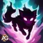
Fähigkeit 1: Caligomora (ultimative Fähigkeit)
Beschreibung im Spiel: Beschwört Caligo für 7s. Während er aktiv ist, verbreitet er eine Aura um sich herum. Caligo erhält 50% des Schadens, der Gegnern innerhalb der Aura zugefügt wird. Nachdem der Countdown abgelaufen ist, stirbt Caligo. Im Moment seines Todes erhalten Gegner innerhalb der Aura 795,605 Schaden und zusätzlichen Schaden in Höhe von Caligos verbleibender Gesundheit. Caligos Gesundheit beträgt 30% von Umbras maximaler Gesundheit. Caligo kann nicht direkt angegriffen werden.
Fähigkeitserklärung: Wenn Umbra Caligomora wirkt, erscheint Caligo für 7 Sekunden und erzeugt eine Aura. Jeder Gegner, der sich noch in dieser Aura befindet, wenn Caligo stirbt, wird von der finalen Explosion getroffen. Entscheidend ist, dass der finale Schaden aus zwei Teilen besteht: einem festen physischen Anteil und einem variablen Gesundheitsanteil.
Formel: (Finaler Schaden = 795,605 physischer Schaden + Caligos verbleibende Gesundheit).
Formel: (Caligos Gesundheit = 14,881,865 Umbras Gesundheit x 30% = 4,464,560 Gesundheit).
Formel: (Maximaler finaler Treffer, wenn Caligo volle Gesundheit behält = 795,605 + 4,464,560 = 5,260,165 Schaden).
Das bedeutet, Umbra belohnt Kontrolle und gutes Zeitgefühl. Wenn Schwarzes Loch Gegner in die Mitte zieht und dein Team sie nahe bei Caligo festhält, kann die Explosion mehrere Ziele auf einmal bestrafen. Im PvP ist das hervorragend gegen Teams, die auf Formation und den richtigen Zeitpunkt angewiesen sind. In gemischten Dungeon-Räumen kann er angeschlagene Gegner erledigen, nachdem Schwarzes Loch und Tenebris sie heruntergedrückt haben. Priorität: Sehr hoch
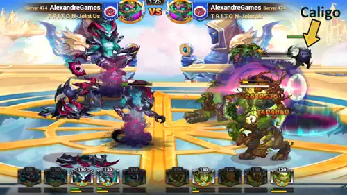
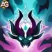
Fähigkeit 2: Spirituelles Band: Dunkelheit (Passiv)
Beschreibung im Spiel: Umbra und Caligo hüllen sich in Schatten und erschaffen ein Band mit dem Element Dunkelheit. Dadurch beginnen sie den Kampf mit 30% Energie und erzeugen 10% mehr Energie für die Aktivierung des Totems des Dunklen Geistes.
Fähigkeitserklärung: Diese passive Fähigkeit ist der Grund, warum Umbra sich im Kampf schnell anfühlt. Die meisten Titanen brauchen Zeit, um ihre erste ultimative Fähigkeit aufzubauen. Umbra startet mit 30% Energie, sodass Caligomora früher kommt. Gleichzeitig lädt sich das Totem des Dunklen Geistes 10% schneller auf, wodurch Schwarzes Loch zuverlässiger wird.
Formel: (Energie zu Kampfbeginn = 30% der maximalen Energie).
Formel: (Energie des Totems des Dunklen Geistes = Basis-Energieerzeugung des Totems x 1.10).
Im PvP entscheidet die erste ultimative Fähigkeit oft den gesamten Kampf. Spirituelles Band hilft Umbra, Druck aufzubauen, bevor der Gegner sich stabilisieren kann. In gemischten Dungeon-Kämpfen hilft dieser schnellere Start deinem Dunkelheits-Team, mit Caligo und Schwarzes Loch zu eröffnen, statt zu warten, während Gegner Schwung aufbauen. Priorität: Sehr hoch
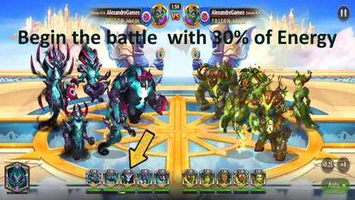

Fähigkeit 3: Haupttotem - Totem des Dunklen Geistes
Schwarzes Loch: Verfügbar, wenn dein Team mindestens 2 Dunkelheits-Titanen auf dem Schlachtfeld hat. Das Totem des Dunklen Geistes beschwört ein Schwarzes Loch im Zentrum des gegnerischen Teams. Das Schwarze Loch zieht Gegner nach innen und fügt ihnen 5 Sekunden lang Schaden zu. Gegner, die weiter von der Singularität entfernt sind, erleiden weniger Schaden.
Formel: (Schaden an der Singularität = 2,655,135 Schaden).
Formel: (Wertebonus für Dunkelheits-Titanen = +3,995,583 Gesundheit für Dunkelheits-Titanen).
Dies ist das perfekte Haupttotem für Umbra. Schwarzes Loch gruppiert Gegner in dem Bereich, in dem Caligo sie halten möchte, und die Bonus-Gesundheit hält Umbra, Tenebris, Keros, Mort und Brustar lange genug am Leben, um ihren Schadenszyklus abzuschließen. Priorität: Sehr hoch
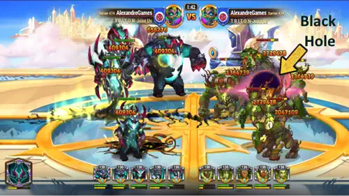
Bester Skin für Titan Umbra - Hero Wars: Dominion Era
Umbra hat aktuell einen Skin, und er gibt genau den Wert, den er am meisten möchte: Gesundheit. Mehr Gesundheit hält Umbra am Leben und macht Caligos potenzielle Explosion größer.
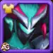
Standard-Skin
Gesundheit: +1,022,985 | Kraft: +5,217
PvP-Entwicklungspriorität: Sehr hoch - Das ist Umbras beste Skin-Investition, weil Gesundheit zwei Dinge gleichzeitig verbessert: Umbra überlebt länger, und Caligo wird widerstandsfähiger. Formel: (Caligo Bonus-Gesundheit = 1,022,985 x 30% = +306,896 Gesundheit). Diese zusätzliche Caligo-Gesundheit kann zu zusätzlichem finalem Explosionsschaden werden, wenn Caligo sie bis zum Ende behält.
Dungeon-Entwicklungspriorität: Hoch - In gemischten 5v5-Dungeon-Räumen ist Gesundheit weiterhin der sicherste Wert, weil sie gegen jedes Element funktioniert und Caligo hilft. Umbra ist kein Kern-Titan für ein einzelnes Dungeon-Element, also verbessere dies nach deinen wichtigsten Dungeon-Tanks, wenn Ressourcen begrenzt sind.
Umbras Artefakt-Entwicklungspriorität - Hero Wars: Dominion Era
Umbras Artefakte müssen durch Caligo betrachtet werden. Alles, was Gesundheit gibt, erhöht die Überlebensfähigkeit und Caligos Schadensobergrenze, während Anti-Licht-Werte im PvP am wichtigsten sind.
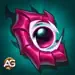
Nephtis' Horn (Waffenartefakt)
Elementarschaden: +479,475 | Kraft: +32,604
Erhöht den Schaden, den Angriffe und Fähigkeiten Licht-Titanen zufügen. Wird weniger effektiv, wenn der angreifende Titan Titanen höheren Levels Schaden zufügt.
PvP-Entwicklungspriorität: Mittel-hoch - Licht-Titanen sind Umbras Hauptfeind, daher hat dieses Artefakt echten Wert, wenn du Licht-Verteidigungen angreifst. Trotzdem kommt Umbras stärkste Skalierung von Gesundheit, weil Gesundheit sowohl Umbra als auch Caligo verbessert. Verbessere Nephtis' Horn nach Cosmos' Seal und nachdem du genug Schutz gegen Licht-Explosionsschaden hast.
Dungeon-Entwicklungspriorität: Mittel - Nützlich in gemischten Räumen mit Licht-Gegnern, aber der meiste Dungeon-Wert für Umbra kommt davon, lange genug am Leben zu bleiben, um Caligo zu beschwören. Dies ist eine sekundäre Dungeon-Investition.
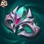
Krone der Dunkelheit (Verteidigungsartefakt)
Elementarrüstung: +175,467 | Kraft: +55,973
Elementarrüstung schützt Umbra vor Angriffen von Licht-Titanen. Wird weniger effektiv, wenn der verteidigende Titan Schaden von Titanen höheren Levels erleidet.
PvP-Entwicklungspriorität: Hoch - Vollständige Licht-Teams sind der zuverlässigste Konter gegen vollständige Dunkelheits-Verteidigungen, daher deckt die Krone der Dunkelheit Umbras gefährlichstes Matchup direkt ab. Wenn Umbra stirbt, bevor Caligo und Schwarzes Loch Druck erzeugen, wird der gesamte Dunkelheits-Plan schwächer.
Dungeon-Entwicklungspriorität: Mittel - In normalen Wasser-, Feuer- und Erde-Dungeon-Räumen hilft dieses Artefakt nicht viel. Es wird vor allem in gemischten 5v5-Räumen nützlich, in denen Licht-Titanen erscheinen.

Cosmos' Seal
Gesundheit: +3,995,583 | Physischer Angriff: +299,673 | Kraft: +40,755
Fügt Umbra Bonus-Gesundheit und Angriff hinzu. Der Gesundheitsbonus funktioniert gegen jede Schadensart.
PvP-Entwicklungspriorität: Sehr hoch - Dies ist Umbras wichtigste Artefakt-Priorität. Gesundheit hält Umbra am Leben und erhöht direkt Caligos Gesundheit. Formel: (Caligo Bonus-Gesundheit = 3,995,583 x 30% = +1,198,675 Gesundheit). Wenn Caligo diese Gesundheit bis zum Ende des Timers behält, kann sie zu zusätzlichem Explosionsschaden werden. Der Angriffsbonus stärkt außerdem Umbras physischen Beitrag.
Dungeon-Entwicklungspriorität: Hoch - Für gemischte Dungeon-Räume ist universelle Gesundheit die zuverlässigste Investition. Sie funktioniert gegen jedes Element und macht Caligo bedrohlicher.
Alexandres Zusammenfassung der Artefakt-Priorität:
- 1.: Cosmos' Seal - Am besten, weil Gesundheit sowohl Umbra als auch Caligo stärkt.
- 2.: Krone der Dunkelheit - Hohe Priorität gegen vollständige Licht-Verteidigungen.
- 3.: Nephtis' Horn - Starker offensiver Wert gegen Licht-Teams, aber weniger universell als Gesundheit.
Beste elementare Totem-Fusion für Umbra
Totem-Fusion fügt dem Haupttotem des Dunklen Geistes zusätzliche automatische Fähigkeiten hinzu. Für Umbra halten die besten Fusionen Gegner entweder länger in Gefahr oder schaffen ein finales Überlebensfenster.
Wie funktioniert Totem-Fusion für Umbra?
Wähle im Fusionsfenster den Fähigkeitstyp, wähle die elementare oder primale Fähigkeit, die du möchtest, und investiere Katalysatoren. Mehr Katalysatoren verbessern deine Chance, die ausgewählte Fähigkeit und einen besseren Rang zu erhalten. Wenn dein Totem diese Fähigkeit bereits hat, erhöht eine erneute Fusion die Chance, sie zu verbessern. Wenn zwei verschiedene Totems dieselbe Fähigkeit haben, wird im Kampf nur die Version mit dem höheren Level aktiviert. Elementare Fähigkeiten lösen normalerweise global ohne Abklingzeit aus, während primale Fähigkeiten durch bestimmte Bedingungen ausgelöst werden und individuelle Abklingzeiten pro Titan haben. Wenn das Endergebnis nicht zu deinem Umbra-Setup passt, kannst du es ablehnen und das Totem in seinen vorherigen Zustand zurückversetzen.
1.: Eiszeit

Eiszeit (Rang I)
Was es bewirkt: Sobald das Basistotem des Gegners aktiviert wird, werden alle gegnerischen Titanen für 1 Sekunde eingefroren und erhalten Zerbrechlichkeit, wodurch sämtlicher Schaden, den sie erleiden, für 5 Sekunden um 15.8% erhöht wird.
Warum es für Umbra am besten ist: Das ist die sauberste Kombination mit Caligomora und Schwarzes Loch. Das Einfrieren kauft Zeit, Zerbrechlichkeit lässt Gegner mehr Schaden nehmen, und Schwarzes Loch hält sie näher am Zentrum, während Caligos 7-Sekunden-Countdown weiterläuft. Wenn Caligo während des Zerbrechlichkeitsfensters explodiert, wird der Explosionsschaden deutlich schwerer zu überleben. Priorität: Sehr hoch
2.: Letzter Blitz

Letzter Blitz (Rang I)
Was es bewirkt: Wenn ein Titan sterben sollte, verfällt er stattdessen in brennende Wut. Geschwindigkeit steigt um 15%, Angriff steigt um 16,100, er wird immun gegen Effekte, und seine Gesundheit kann für 5 Sekunden nicht unter 1 fallen. Es aktiviert sich einmal pro Kampf.
Warum es zu Umbra passt: Umbras Team gewinnt oft, indem es überlebt, bis der verzögerte Explosionsschaden endet. Letzter Blitz kann Umbra, Tenebris oder einen anderen wichtigen Dunkelheits-Titanen lange genug am Leben halten, um noch eine ultimative Fähigkeit zu wirken, den Druck von Schwarzes Loch aktiv zu halten oder einen Licht-Gegner zu erledigen, der kurz vor dem Sieg stand. Priorität: Hoch
3.: Flammentanz

Flammentanz (Rang I)
Was es bewirkt: Beschwört einen flammenden Wirbel, der durch das gegnerische Team fegt und Gegner in der Nähe beschädigt. Schaden an Gegnern bei jeder Aktivierung: 126,875, abhängig von Totemkraft und Fähigkeitsrang.
Warum es mit Umbra funktioniert: Flammentanz ist nicht so defensiv wie Eiszeit oder Letzter Blitz, aber es stapelt zusätzlichen Flächenschaden in dasselbe Fenster, in dem Schwarzes Loch und Caligomora Gegner bereits leiden lassen. Es ist besonders nützlich, wenn du schnellere Kills in PvP-Angriffen oder gemischten Dungeon-Räumen willst. Priorität: Mittel-hoch
Beste primale Totem-Fusion für Umbra
Primale Fusionen helfen Umbra, Fähigkeiten häufiger zu rotieren oder lange genug zu überleben, damit Caligo den Kampf beenden kann. Die besten Optionen bevorzugen Energie, Heilung und entscheidenden Schaden.
1.: Primaler Eifer

Primaler Eifer (Rang I)
Was es bewirkt: Beim Einsatz der Basisfähigkeit hat der Titan eine Chance, einen Teil seiner Energie wiederherzustellen. Energiemenge: 40 der maximalen Energie. Aktivierungschance: 20%, abhängig vom Fähigkeitsrang.
Warum es für Umbra am besten ist: Umbra startet bereits mit 30% Energie. Primaler Eifer treibt dieses Tempo noch weiter an, hilft ihm, Caligomora häufiger zu erreichen, und speist indirekt den Druckrhythmus des Dunkelheits-Teams. Mehr ultimative Fähigkeiten von Umbra bedeuten mehr Caligo-Countdowns und mehr Chancen, Fehler zu erzwingen. Priorität: Sehr hoch
2.: Puls der Ahnen

Puls der Ahnen (Rang I)
Was es bewirkt: Jedes Mal, wenn ein verbündeter Titan eine Fähigkeit einsetzt, wird dieser Titan geheilt. Heilung: 112,000. Aktivierung: höchstens einmal alle 21 Sekunden, abhängig vom Fähigkeitsrang.
Warum es Umbra hilft: Vollständige Dunkelheits-Teams müssen lange genug überleben, damit verzögerter Schaden, Schwarzes Loch und Tenebris' Druck den Kampf beenden können. Puls der Ahnen gibt Durchhaltevermögen, ohne einen dedizierten Heiler zu benötigen, was wertvoll ist, weil das beste Umbra-Team für Offensive gebaut ist. Priorität: Hoch
3.: Ruf der Elemente

Ruf der Elemente (Rang I)
Was es bewirkt: Der Angriff des Titans steigt proportional zur fehlenden Gesundheit. Angriffsbonus: 2,100 für jeweils fehlende 21% Gesundheit des Maximums, abhängig vom Fähigkeitsrang.
Warum es nützlich ist: Umbra nimmt oft Druck durch Licht-Konter und Flächenschaden auf, bevor der Kampf entschieden ist. Ruf der Elemente verwandelt diese fehlende Gesundheit in mehr Angriff, was den Basisschaden und den physischen Teil von Umbras Schadenszyklus unterstützt. Es ist nicht so universell wie Primaler Eifer, aber es liefert entscheidenden Wert in langen Kämpfen. Priorität: Mittel-hoch
Wie man Titan Umbra kontert - Hero Wars: Dominion Era
Umbra ist ein Dunkelheits-Titan, daher sind Licht-Titanen die natürliche Konterklasse. Der Schlüssel liegt nicht nur darin, Umbra härter zu treffen, sondern auch Caligos 7-Sekunden-Countdown und das Schwarze Loch des Totems des Dunklen Geistes zu überleben. Vollständige Licht-Teams sind besonders zuverlässig in der Verteidigung, obwohl das getestete vollständige Dunkelheits-Team Licht beim manuellen Angriff immer noch besiegen kann.


Amon: Amon setzt Dunkelheits-Teams mit Schaden des Licht-Elements unter Druck. Seine Aufgabe ist es, schnell genug anzugreifen, damit Umbra Caligomora und Schwarzes Loch nicht bequem rotieren kann. Wenn Amon hilft, Umbra zu entfernen, bevor Caligo seinen vollen Wert erhält, verliert das Dunkelheits-Team seinen Motor für verzögerten Explosionsschaden.
Iyari: Iyari kontert Umbra, indem sie das Licht-Team während des gefährlichen 7-Sekunden-Fensters von Caligo stabil hält. Heilung und Unterstützung verringern die Chance, dass Caligomora geschwächte Ziele erledigt, und anhaltender Licht-Druck zwingt Umbras Team, schnell zu gewinnen.
Lumira: Lumira ist der sauberste strategische Konter, weil Apollo einen Teil des eingehenden Drucks umleiten kann und die Supernova des Totems des Lichtgeistes verhindert, dass verbündete Titanen 5 Sekunden lang unter 1 Gesundheit fallen. Wenn Supernova mit Caligos Detonation überlappt, kann Umbras größter Explosionsschaden stark abgeschwächt werden.
Rigel: Rigel gibt Licht-Teams eine stabile Frontlinie. Schilde und Widerstandsfähigkeit kaufen Zeit für Solaris, Amon und Lumira, um Umbra zu bestrafen. Je länger Rigel hält, desto wahrscheinlicher überlebt das Licht-Team den ersten Caligomora-Zyklus.
Solaris: Solaris ist gefährlich, weil Licht und Dunkelheit einander gegenüberstehen. Ihr Druck hilft, Dunkelheits-Teams zu brechen, bevor sie ins Rollen kommen, und zusammen mit Lumira trägt sie zum Plan des Totems des Lichtgeistes bei, der Caligo überleben und mit Supernova-Schaden antworten kann.
Konter-Tipp: Bleib nicht passiv stehen und lass Umbra den Rhythmus bestimmen. Erzwinge frühen Licht-Druck, schütze das Team während Caligos Countdown und spare defensive Werkzeuge für den Moment, in dem Caligo stirbt.
Beste Umbra-Teams - Hero Wars: Dominion Era
Das beste Umbra-Team aus den Testdaten ist eine vollständige Dunkelheits-Aufstellung: Tenebris, Keros, Umbra, Mort und Brustar. Es ist extrem bedrohlich gegen Feuer- und Wasser-Teams, kann Licht im Angriff besiegen und verlässt sich auf Tenebris als Haupt-Finisher, während Umbra Caligo und das Totem des Dunklen Geistes beschleunigt.
| Bestes Umbra-Team - Hero Wars: Dominion Era | ||||
|---|---|---|---|---|
|
|
|
Umbra |
|
|
|
|
Eiszeit |
Primaler Eifer |
||
|
|
Letzter Blitz |
Puls der Ahnen |
||
Strategie der Teamzusammenstellung
Tenebris: Die wichtigste Schadensbedrohung und der MVP, der in den Kampftestdaten hervorsticht. Tenebris kann bis spät in Kämpfe überleben und Gegner erledigen, nachdem Umbra und Schwarzes Loch Druck aufgebaut haben.
Keros: Fügt mehr Dunkelheits-Druck hinzu, sodass das Team Gegner ständig bedroht hält, während Caligos Countdown läuft.
Umbra: Startet mit 30% Energie, beschwört Caligo früh und gibt dem Totem des Dunklen Geistes 10% mehr Energieerzeugung. Er ist der Tempo-Motor.
Mort: Unterstützt den Dunkelheits-Plan, indem er Verbündete stärkt und dem Team hilft, den offensiven Schwung zu halten.
Brustar: Vervollständigt den vollen Dunkelheits-Kern und hält den Dunkelheits-Titanen in der Frontlinie geschützt.
Alexandres Kampftest-Ergebnisse mit Titan Umbra:
- Volles Wasser: Sieg gegen Hyperion, Mairi, Tydus, Nova und Sigurd.
- Volles Feuer: Sieg gegen Ignis, Araji, Asherona, Vulcan und Moloch.
- Volle Erde: Schwieriges Matchup. Das Team gewann etwa 10% der Zeit und verlor etwa 90% der Zeit gegen Sylva, Eden, Verdoc, Avalon und Angus.
- Volles Licht: Niederlage in der Verteidigung, aber Sieg im Angriff. Volles Licht bleibt der sicherste Konter, wenn es die defensive Aufstellung kontrolliert.
- Wichtigste Lektion: Setze Umbras Dunkelheits-Team aggressiv gegen Feuer und Wasser ein. Sei vorsichtig gegen Erde und vollständige Licht-Verteidigungen.
Fazit: Meistere Umbra und kontrolliere den dunklen Countdown
Umbra ist eine kluge Investition für Spieler, die vollständige Dunkelheits-Teams und taktisches Zeitgefühl mögen. Seine Stärke liegt nicht nur in der Zahl auf Caligomora; sie liegt darin, wie Caligo, Schwarzes Loch, Tenebris-Druck und schnelleres Aufladen des Dunklen Totems zu einem gefährlichen Kampfrhythmus verschmelzen.
Priorisiere zuerst Cosmos' Seal, weil Gesundheit sowohl Umbra als auch Caligo verbessert. Baue danach die Krone der Dunkelheit für Licht-Matchups und Nephtis' Horn für stärkere Anti-Licht-Offensive aus. Bei Totem-Fusionen sind Eiszeit und Primaler Eifer die saubersten Entscheidungen, weil sie Umbras Aktivierungszeitpunkt, Druck und Kontrolle verbessern. Baue das vollständige Dunkelheits-Team, wenn du Umbra in Bestform nutzen willst, aber respektiere Licht-Verteidigungen und starke Erde-Teams.
Video-Leitfaden: Hat Umbra das Meta der Dunkelheits-Titanen verändert? Vollständiger Leitfaden + echte Tests - Hero Wars Dominion Era

▶ Dieses Video auf YouTube ansehen
Entdecke neue Fähigkeiten mit unseren empfohlenen Leitfäden!
 Angus Leitfaden für Hero Wars: Dominion Era
Angus Leitfaden für Hero Wars: Dominion Era
 Avalon Titan-Leitfaden für Hero Wars: Dominion Era
Avalon Titan-Leitfaden für Hero Wars: Dominion Era
 Ignis Titan-Leitfaden für Hero Wars: Dominion Era
Ignis Titan-Leitfaden für Hero Wars: Dominion Era
 Lumira Leitfaden für Hero Wars: Dominion Era
Lumira Leitfaden für Hero Wars: Dominion Era
 Mairi Titan-Leitfaden für Hero Wars: Dominion Era
Mairi Titan-Leitfaden für Hero Wars: Dominion Era
 Tydus Titan-Leitfaden für Hero Wars: Dominion Era
Tydus Titan-Leitfaden für Hero Wars: Dominion Era
Hinterlasse deine Meinung!
Hat dir unser Umbra-Titan-Leitfaden für Hero Wars: Dominion Era gefallen? Gab es etwas, das du nicht verstanden hast oder bei dem du Änderungen vorschlagen möchtest? Nimm am Kommentarbereich von Alexandre Games teil und teile deine Fragen oder Ideen.
Klicke auf den Button unten, um loszulegen: